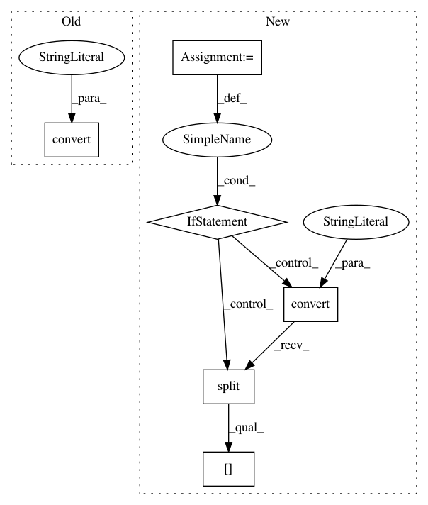

035832c8fa5b2078c66d2833a15dc6582e43e142,lib/iproc.py,,read_image_rgb_uint8,#Any#,54
Before Change
def read_image_rgb_uint8(path):
src = Image.open(path).convert("RGB")
dst = np.array(src, dtype=np.uint8)
return dst
After Change
if src.mode in ("L", "RGB", "P"):
if isinstance(src.info.get("transparency"), bytes):
src = src.convert("RGBA")
mode = src.mode
if mode in ("LA", "RGBA"):
if mode == "LA":
src = src.convert("RGBA")
rgb = Image.new("RGB", src.size, (128, 128, 128))
rgb.paste(src, mask=src.split()[-1])
else:
rgb = src.convert("RGB")
dst = np.array(rgb, dtype=np.uint8)
return dst
In pattern: SUPERPATTERN
Frequency: 3
Non-data size: 6
Instances
Project Name: tsurumeso/waifu2x-chainer
Commit Name: 035832c8fa5b2078c66d2833a15dc6582e43e142
Time: 2018-11-06
Author: tsurumeso@gmail.com
File Name: lib/iproc.py
Class Name:
Method Name: read_image_rgb_uint8
Project Name: tsurumeso/waifu2x-chainer
Commit Name: 7c57e6f2de0795edef5aed8cbcebb1243ba86191
Time: 2018-02-23
Author: nstm101339@gmail.com
File Name: lib/reconstruct.py
Class Name:
Method Name: image_tta
Project Name: tsurumeso/waifu2x-chainer
Commit Name: 7c57e6f2de0795edef5aed8cbcebb1243ba86191
Time: 2018-02-23
Author: nstm101339@gmail.com
File Name: lib/reconstruct.py
Class Name:
Method Name: image